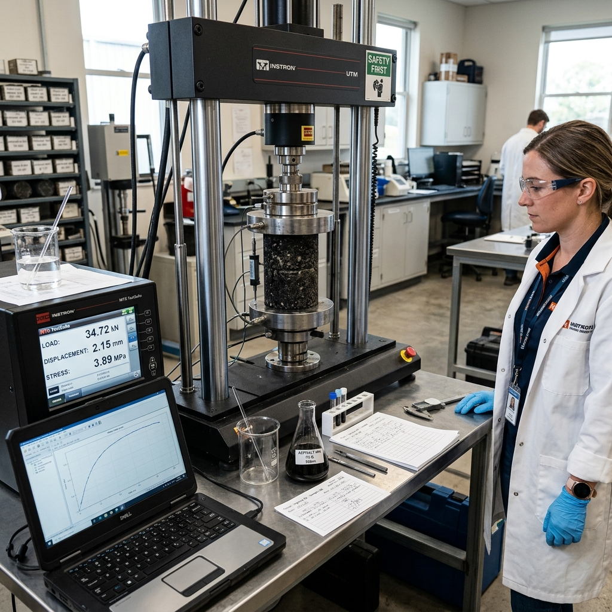

Consultancy & compliance services
Certification, testing coordination, documentation, and industrial compliance support.
ASPHALTIKA helps businesses navigate BIS, ISO, NABL, product testing, road material testing, audit documentation, and industrial compliance requirements with practical guidance.
Infrastructure Materials
Related supply categories for road construction, bitumen products, waterproofing, fuels, and materials.
02Industrial Oils & Materials
Related industrial oil and electrical insulation material categories for B2B buyers.
03Consultancy & Compliance Services
BIS, ISO, NABL, testing coordination, audit documentation, and industrial compliance assistance.
Category 3
Consultancy & Compliance Services
Professional support for certification, accreditation, testing coordination, road material testing, audits, and industrial compliance documentation.


Consultancy Services
BIS Certification Consultancy
Support for Bureau of Indian Standards certification processes.
Purpose: documentation, coordination, and compliance guidance. ISOISO 9001 Consultancy
Quality management system consultancy for business processes.
Use: quality documentation and audit readiness. ISOISO 14001 Consultancy
Environmental management system consultancy support.
Industries: manufacturing, industrial, and infrastructure businesses. ISOISO 45001 Consultancy
Occupational health and safety management system support.
Purpose: safety documentation and compliance readiness. NABLNABL Accreditation Consultancy
Consultancy support for laboratory accreditation requirements.
Use: lab process alignment and documentation support. TESTProduct Testing Support
Coordination support for product testing and compliance needs.
Industries: product suppliers and industrial businesses. LABMaterial Testing Coordination
Support for coordinating testing of industrial and road materials.
Purpose: test planning, coordination, and documentation. ROADRoad Material Testing
Testing coordination for bitumen, emulsion, asphalt, and road materials.
Use: road construction and infrastructure quality support. DOCAudit & Documentation Support
Practical support for audit files, records, and process documentation.
Purpose: audit readiness and compliance presentation. COMPIndustrial Compliance Assistance
Guidance for businesses managing technical compliance requirements.
Use: industrial operations, certifications, and process controls.